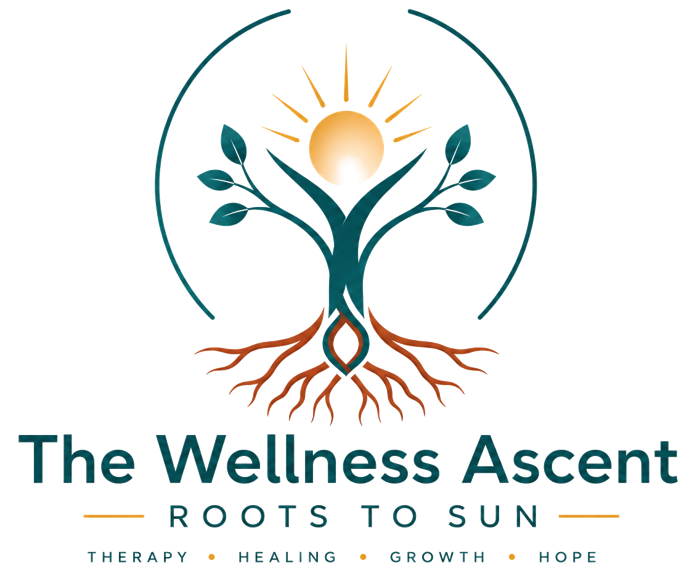

Our mission
To provide accessible, compassionate and evidence-based mental health and nutrition care that helps people heal, grow and flourish.

We are a holistic wellness practice helping people in Kenya and Seychelles heal, grow and flourish — in mind, body and everyday life.
Too often, people seeking help are passed between services that never speak to each other. We believed there was a better way.
The Wellness Ascent brings psychotherapy, psychiatric care and nutrition together in one welcoming practice. Whether you are facing anxiety, a difficult season in your relationship, a new diagnosis or simply want to feel more like yourself, our practitioners work as one team around you.
We started in Nairobi and now serve clients across Kenya — in person and online — and in Seychelles through secure virtual care. Wherever you are, you deserve support that is professional, culturally aware and deeply human.

To provide accessible, compassionate and evidence-based mental health and nutrition care that helps people heal, grow and flourish.
A world where everyone in Kenya, Seychelles and beyond can access care that meets them where they are — and helps them rise.
Helping individuals grow from their roots toward a life of healing, resilience and hope.

Our logo tells our story. Nature is our metaphor — growth is our purpose.
Resilience and stability. We begin by understanding your history, relationships and experiences.
Growth and transformation. Together we build skills, habits and insight that last.
Hope and flourishing. The goal is not only to feel less pain — but to live fully.
We meet every person with warmth, patience and without judgement.
What you share stays private, protected by professional ethics and secure systems.
Our methods are grounded in current research and clinical guidelines.
We consider the whole person — emotions, body, relationships and environment.
Everyone is welcome, whatever their background, faith, identity or story.
Honest guidance, clear fees and care that always puts your wellbeing first.


Reach out today. A member of our team will help you find the right care.